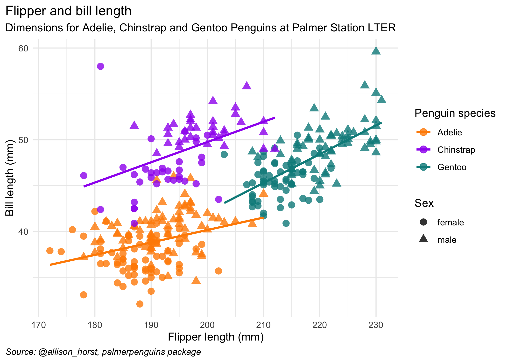

14 Module 1
14.1 Learning Checklist
By the end of this module, you should be able to:
- Understand the structure and policies of STA303.
- Be able to open and work with an RMarkdown document, knit to pdf and export that pdf (RStudio, JupyterHub).
- [STA302 review] Explain the assumptions of linear regression and identify situations where they might be violated.
- Describe the execution and purpose of several common statistical tests (one-sample t-test, paired sample t-test, two-sample t-test, one-way ANOVA), and identify how to conduct them in a linear regression framework.
- Create a reproducible example (reprex) for use in explaining an error being produced by your code.
14.2 Instructor information
Prof. Liza Bolton
Course email: sta303@utoronto.ca
Office hours: During the second half of Wednesday classes: 11:10—12:00 p.m. ET and 4:10—5:00 p.m. ET
Please do not email my individual email with STA303 questions or use Quercus mail. It makes it harder to keep track of and address your questions. Sending me messages on three different platforms will NOT speed up my response. I will not respond messages that don’t follow the course communication policy.
You can see the latest version of my email autoresponder here.
14.3 Upward management tips
‘Upward management’ is basically managing your manager.9 If you make their life easier and help them be more effective, this should also make your life easier and is a good investment in your own career and skills building.
While our course isn’t a business, some of the basic parts of this concept apply well to your time at university AND can set you up for success in graduate studies and your future career.
But why should you put effort into upward managing me? Well, while I will always seek to treat all students fairly and to listen to your feedback, YOU can make this easier or harder for me, and thus make this course better or worse for yourselves.
For example, if I have to use all my time and energy following up on unclear emails for more information and dealing with students who haven’t followed instructions etc. etc….I won’t have that energy to put into writing TeamUp! activities to give you extra practice and opportunities to earn bonus points.
14.3.1 Communicate using the tools your manager prefers
- In business, this means knowing who likes face-to-face vs email, or whether your manager would rather receive an instant message than an email for a quick question.
- In STA303, this means:
- Using Piazza for all course admin and content questions.
- Using the appropriate forms for accommodations and regrade requests.
- Emailing sta303@utoronto.ca for private issues not otherwise covered by the other tools, e.g. emailing me your Accommodation Services letter, requesting an extension to an assessment that conflicts with essential travel.
- Asking questions in office hours.
14.3.2 Write good emails (when emails are appropriate)
- In business, this might mean:
- Choosing who should be the main recipients vs CCed/BCCed.
- Ensuring your contact details are clear in your signature.
- Make sure the subject line is informative and short
- Making the text of the email as clear and concise as possible.
- Use proper grammar and punctuation.
- Don’t use emoji in formal emails. If in doubt, leave ’em out.
- In STA303, this looks like:
- Everything in the right-hand column, plus the following.
- Starting an email with “Hi Prof. Bolton,” or “Hi Liza,”10
- Sign off the email with your preferred name (i.e. what should I call you when I reply) and if your have different official name, include that and your UTORid below your name.
- Subject line including [Prof. Bolton] or [TA name] if your email is for a specific person.
14.3.3 Understand your manager’s goals
- In business, this might look like understanding their KPIs and how you can help make sure these are met.
- In STA303, most of my goals are for you, like that you learn useful statistical skills, improve your writing skills etc. I also personally want to improve as an instructor and have fun talking about something I love.
- You can help me with these goals by working on this course every week, trying your best, asking for help early and often, engaging with feedback gathering mechanisms and providing constructive feedback if something is not working.
14.3.4 Demonstrate self-management and resilience while also asking for help and flagging problems early.
- In business, this might look like:
- Being proactive about addressing possible problems before they occur. Managers like a ‘no surprises’ policy.
- Preparing a list of questions to cover in a meeting or to compile in an organized fashion into one email (instead of ten).
- Searching for answers yourself before asking your manager and improving your strategies for finding available information.
- In STA303, this looks like:
- Putting in a little effort into find answers before posting on Piazza/asking in class. (Have you searched Piazza? have you re-read/watched the assigned materials? have your checked the syllabus and recent announcements?)
- Come to office hours often, lists of questions very welcome!
- Getting in touch (or asking your registrar to) early if you might hate to miss a lot of class. It is usually easier to find a solution if I know things ahead of time, or as soon as possible after.
14.4 Recap of linear models
14.4.1 Why model?
- The goal of a model is to provide a (relatively) simple summary of a dataset.
- We can describe data AND make predictions.
14.4.2 Linear models
In a linear model,
\(y_i = \beta_0 + \beta_1x_{1i} + ... + \beta_px_{pi} + \epsilon_i\)
The response is predicted by a linear function of explanatory (or predictor) variables plus an error term.
a.k.a.
DATA = MODEL + ERROR
14.4.3 Linear regression assumptions
L: your model is Linear.
I: Errors are Independent (usually satisfied if observations are independent).
N: Errors are Normally distributed with expected value zero, \(E[\epsilon_i]=0\)
E: Equal/constant variance (homoscedasticity), \(\text{var}[\epsilon_i] = \sigma^2\).
We can express “I N E” above as assuming the errors are i.i.d Normal with mean of zero and variance \(\sigma^2\), \[\epsilon_i \sim N(0, \sigma^2)\]
14.4.4 What makes it a linear model?
A model is linear if it is linear in the parameters. That is, all the \(\beta\) enter the model in a linear way. It is totally fine if the predictor variables enter the model in a non-linear way.
14.4.4.1 Linear
- \(y_i = \beta_0 + \beta_1x_i + \beta_2x_i^2 + \epsilon_i\)
- \(y_i = \beta_0 + γ_1δ_1x_{1i} + \beta_2\exp(x_{2i}) + \epsilon_i\)
14.4.4.2 NOT linear
- \(y_i = \beta_0 + \beta_1x_i^{\beta_2} + \epsilon_i\)
- \(y_i = \beta_0 exp(\beta_1x_{1i}) + \epsilon_i\)
Internally screaming “DON’T LET THE BETAS TOUCH” often helps me remember what is not linear. Additionally, don’t let them do anything weird, like get exponentiated.
14.4.5 Optional refresher reading
14.4.5.1 Brief discussion of assumptions with examples
Section 1.3 of Broaden your Statistical Horizons on the assumptions of OLS https://bookdown.org/roback/bookdown-bysh/ch-MLRreview.html#ordinary-least-squares-ols-assumptions [freely accessible]
14.4.5.2 Fitting linear models in R
Section 1.6 of Broaden your Statistical Horizons on Multiple linear regression (bootstrapping not assessed) https://bookdown.org/roback/bookdown-bysh/ch-MLRreview.html#multreg [freely accessible]
14.4.5.3 Delicious mathematics
Chapter 1 of Wood, S. N. (2017). Generalized additive models : An introduction with r, second edition http://go.utlib.ca/cat/13435628 [you will need to log in to the U of T library for access]
14.5 The data for module 1
.left-column[
The data we’ll be looking for the next section of this week is from the palmerpenguins package by Allison Horst.
# install.packages("palmerpenguins")
library(palmerpenguins)
Artwork by @allison_horst

14.5.1 Let’s meet the penguins
library(tidyverse)
glimpse(penguins, width = 80) # width here just influences how this is displayed## Rows: 344
## Columns: 8
## $ species <fct> Adelie, Adelie, Adelie, Adelie, Adelie, Adelie, Adel…
## $ island <fct> Torgersen, Torgersen, Torgersen, Torgersen, Torgerse…
## $ bill_length_mm <dbl> 39.1, 39.5, 40.3, NA, 36.7, 39.3, 38.9, 39.2, 34.1, …
## $ bill_depth_mm <dbl> 18.7, 17.4, 18.0, NA, 19.3, 20.6, 17.8, 19.6, 18.1, …
## $ flipper_length_mm <int> 181, 186, 195, NA, 193, 190, 181, 195, 193, 190, 186…
## $ body_mass_g <int> 3750, 3800, 3250, NA, 3450, 3650, 3625, 4675, 3475, …
## $ sex <fct> male, female, female, NA, female, male, female, male…
## $ year <int> 2007, 2007, 2007, 2007, 2007, 2007, 2007, 2007, 2007…The glimpse function comes from the tibble package, which is in loaded by the tidyverse package.
One of the most common issues students encounter when learning R is that they are trying to use functions that they haven’t installed or loaded the package for. Make sure you’ve read the slides about RStudio on the JupyerHub because packages you install there will need to be reinstalled each session if they are not the list of automatically available ones.
tidyverse is automatically available so you only need to run library(tidyverse) or use the namespace for the function tibble::glimpse().
14.5.2 The variables
I hope most of the variables here are clear from their names. In particular, we will be interested in species, which has three levels (Adelie, Gentoo, Chinstrap), sex (male, female, NA), body_mass_g (body mass in grams) and flipper_length_mm (length of their flippers measure in mm). We’re not using the variables about the bills, but I thought this diagram was interesting anyway.
 Artwork by @allison_horst
Artwork by @allison_horst
.left-column[
## `geom_smooth()` using formula 'y ~ x'
Here are all our variables of interest in one plot.
Note: In this chart and in future analyses involving sex, penguins with an unknown sex have been removed.
14.6 Common statistical tests as linear regression
There is an interactive version of the below notes at this link.
14.6.1 Introduction
You have probably encountered several statistical tests in your studies so far.
14.6.1.1 Parametric
E.g. one-sample t-tests, paired t-tests, two-sample t-tests, one-way ANOVA, two-way ANOVA
Parametric tests make assumptions about the distribution of the population from which our sample data have been drawn.
14.6.1.2 Non-parametric
E.g. Wilcoxon signed rank, Mann Whitney-U, Kruskal-Wallace
Non-parametric tests do not assume that our outcome is Normally distributed. They are sometimes called ‘distribution-free,’ but note that this is because they have fewer assumptions than parametric tests, not because they have no assumptions at all.
14.6.1.3 Aside: But why are there two types of tests?
Parametric tests are more powerful, i.e., they have a better chance of detecting an effect if there is one there to find. So why would you ever use a less powerful test? Well, with great power comes great responsibility more assumptions that must be valid to proceed.

Non-parametric tests are a great choice when your outcome is an ordinal variable, is ranks, or there are problematic outliers.
For the purposes of this lesson, we’re going to focus more on parametric tests, but also take a look at the corresponding non-parametric tests with the slight white lie that they are just ranked versions of their parametric companions. This approach is pretty good as long as you have a reasonable sample size.
Imagine this:
You’re on a ship trying to spot land. Parametric tests are the crew member with the best eyesight, but they can be fussy and the conditions have to be right for them to work in or they will breakdown.
Non-parametric tests are the crew member with not quite as good eyesight, but they’re more laid back about the conditions you make them work in.
In the following sections we’ll explore several of these tests.
14.6.2 One-sample t-test
I am assuming you’ve seen this in a 200-level statistics course or equivalent. Brief recap below.
14.6.2.1 Use case
You want to know if it is believable that the population mean is a certain value (our ‘hypothesized value’ below).
14.6.2.2 Assumptions
- The data are continuous.
- The data are normally distributed.
- The sample is a simple random sample from its population. Each individual in the population has an equal probability of being selected in the sample
(Do these sound familiar from linear regression?)
14.6.2.3 Hypotheses
\[H_0: \mu = \text{hypothesized val}\] \[H_1: \mu \ne \text{hypothesized val}\]
What are we doing? Finding the strength of evidence against the claim that the population mean is some hypothesized value.
The test statistic, t, is calculated as follows:
\[ t = \frac{\bar{x} - \text{hypothesized val}}{s/\sqrt{n}} \]
We then compare this t value to the t-distribution with degrees of freedom df = n - 1 and find the area under the curve that represents the probability of values likes ours or more extreme.
14.6.2.4 Example
Suppose existing research suggests that the average weight of penguins is 4000 grams. You want to see if this makes sense for your new penguins data.
\[H_0: \mu = 4000\] \[H_1: \mu \ne 4000\]
The penguins dataset is already loaded, you you don’t have to run any libraries. Use the t.test() function run a one-sample t-test.
t.test(penguins$body_mass_g, mu = 4000, var.equal = TRUE)##
## One Sample t-test
##
## data: penguins$body_mass_g
## t = 4.6525, df = 341, p-value = 4.7e-06
## alternative hypothesis: true mean is not equal to 4000
## 95 percent confidence interval:
## 4116.458 4287.050
## sample estimates:
## mean of x
## 4201.75414.6.2.5 Now as a linear model
First, consider the following, what would a linear regression with no predictor variables and just an intercept tell you?
Create a linear regression model called mod1(replace the blank below) that is an ‘intercept only model’ with body_mass_g as the response.
mod1 <- lm(body_mass_g ~ 1, data=penguins)
summary(mod1)##
## Call:
## lm(formula = body_mass_g ~ 1, data = penguins)
##
## Residuals:
## Min 1Q Median 3Q Max
## -1501.8 -651.8 -151.8 548.2 2098.2
##
## Coefficients:
## Estimate Std. Error t value Pr(>|t|)
## (Intercept) 4201.75 43.36 96.89 <2e-16 ***
## ---
## Signif. codes: 0 '***' 0.001 '**' 0.01 '*' 0.05 '.' 0.1 ' ' 1
##
## Residual standard error: 802 on 341 degrees of freedom
## (2 observations deleted due to missingness)It turns out the estimate from this linear regression is the same as the sample mean.
mean(penguins$body_mass_g, na.rm = TRUE) #na.rm = TRUE removes missing values## [1] 4201.754Now, recall that with the t-test, we calculate our test statistic by subtracting the hypothesized value from the mean. Let’s run the linear model again, but on the left-hand side of the formula, subtract the hypothesized value.
mod2 <- lm(body_mass_g-4000 ~ 1, data=penguins)
summary(mod2)##
## Call:
## lm(formula = body_mass_g - 4000 ~ 1, data = penguins)
##
## Residuals:
## Min 1Q Median 3Q Max
## -1501.8 -651.8 -151.8 548.2 2098.2
##
## Coefficients:
## Estimate Std. Error t value Pr(>|t|)
## (Intercept) 201.75 43.36 4.652 4.7e-06 ***
## ---
## Signif. codes: 0 '***' 0.001 '**' 0.01 '*' 0.05 '.' 0.1 ' ' 1
##
## Residual standard error: 802 on 341 degrees of freedom
## (2 observations deleted due to missingness)Compare the results of this summary(mod2) and your earlier t-test. You should see that the t value, degrees of freedom and p-value are the same for both analyses.
Thus, our one sample t-test hypotheses, \[H_0: \mu = \text{hypothesized val}\] \[H_1: \mu \ne \text{hypothesized val}\]
are equivalent to our linear regression hypotheses about the intercept,
\[H_0: \beta_0 = \text{hypothesized val}\] \[H_1: \beta_0 \ne \text{hypothesized val}.\]
14.6.2.6 Wilcoxon signed-rank test
While the linear regression approach to the one-sample t-test is exact, we can also approximate the Wilcoxon rank-sign test with linear regression. See below.

Note: The above is just example from some toy data, but aims to illustrate how a t-test is treating the data and how the Wilcoxon test is treating the data.
# Function to get signed rank of each observation
signed_rank = function(x) sign(x) * rank(abs(x))
# The wilcoxon test function
wilcox.test(penguins$body_mass_g, mu = 4000)##
## Wilcoxon signed rank test with continuity correction
##
## data: penguins$body_mass_g
## V = 34723, p-value = 0.0004829
## alternative hypothesis: true location is not equal to 4000# Equivalent linear model
mod3 <- lm(signed_rank(penguins$body_mass_g-4000) ~ 1)
summary(mod3)##
## Call:
## lm(formula = signed_rank(penguins$body_mass_g - 4000) ~ 1)
##
## Residuals:
## Min 1Q Median 3Q Max
## -334.63 -173.13 -22.13 187.87 305.37
##
## Coefficients:
## Estimate Std. Error t value Pr(>|t|)
## (Intercept) 36.63 10.53 3.479 0.000569 ***
## ---
## Signif. codes: 0 '***' 0.001 '**' 0.01 '*' 0.05 '.' 0.1 ' ' 1
##
## Residual standard error: 194.7 on 341 degrees of freedom
## (2 observations deleted due to missingness)[Optional] Check out the theory behind the rank transformation in section 3.0.2 https://lindeloev.github.io/tests-as-linear/#3_pearson_and_spearman_correlation
14.6.2.7 Paired sample t-test and Wilcoxon matched pair
A paired t-test is equivalent to a one sample t-test if you just consider \(x_{\text{diff}\ i} = x_{1i} - x_{2i}\), i.e., \(x_{\text{diff}\ i}\) is the difference of the paired values for each observation, and proceed with \(x_{\text{diff}\ i}\) as you would in the one sample case. Likewise for the Wilcoxon.
The R code (not evaluated here) would be as follows:
# Built-in Wilcoxon matched pairs
wilcox.test(x1, x2, paired = TRUE)
# Equivalent linear model:
summary(lm(signed_rank(x1 - x2) ~ 1))14.6.3 Dummy variables
Let’s take a quick detour before we explore the next tests. We’ll need to understand the concept of dummy variables and contrasts first.
14.6.3.1 The matrices we use for linear regression
Recall that we can express our linear regression in matrix form:
\[\mathbf{y} = X\boldsymbol\beta + \boldsymbol\varepsilon\]
where
\[ \mathbf{y} = \begin{pmatrix} y_1 \\\ y_2 \\\ \vdots \\\ y_n \end{pmatrix} , \] \[ \boldsymbol\beta = \begin{pmatrix} \beta_0 \\\ \beta_1 \\\ \beta_2 \\\ \vdots \\\ \beta_p \end{pmatrix}, \quad \boldsymbol\varepsilon = \begin{pmatrix} \varepsilon_1 \\\ \varepsilon_2 \\\ \vdots \\\ \varepsilon_n \end{pmatrix} \]
and
\[X = \begin{pmatrix} \mathbf{x}^\mathsf{T}_1 \\ \mathbf{x}^\mathsf{T}_2 \\ \vdots \\ \mathbf{x}^\mathsf{T}_n \end{pmatrix} = \begin{pmatrix} 1 & x_{11} & \cdots & x_{1p} \\ 1 & x_{21} & \cdots & x_{2p} \\ \vdots & \vdots & \ddots & \vdots \\ 1 & x_{n1} & \cdots & x_{np} \end{pmatrix}\]
We often talk about X as the model matrix (or design or regressor matrix) and it will be the focus of this section.
14.6.3.2 Getting our model matrix in R
Let’s start by fitting a model with body_mass_g as the response and flipper_length_mm and species as the predictor variables.
(Note: Users of statistics use a lot of different words to refer to the same thing. Can you think of other terms people might use instead of response and predictor?)
mod4 <- lm(body_mass_g ~ flipper_length_mm + species, data=penguins)
summary(mod4)##
## Call:
## lm(formula = body_mass_g ~ flipper_length_mm + species, data = penguins)
##
## Residuals:
## Min 1Q Median 3Q Max
## -927.70 -254.82 -23.92 241.16 1191.68
##
## Coefficients:
## Estimate Std. Error t value Pr(>|t|)
## (Intercept) -4031.477 584.151 -6.901 2.55e-11 ***
## flipper_length_mm 40.705 3.071 13.255 < 2e-16 ***
## speciesChinstrap -206.510 57.731 -3.577 0.000398 ***
## speciesGentoo 266.810 95.264 2.801 0.005392 **
## ---
## Signif. codes: 0 '***' 0.001 '**' 0.01 '*' 0.05 '.' 0.1 ' ' 1
##
## Residual standard error: 375.5 on 338 degrees of freedom
## (2 observations deleted due to missingness)
## Multiple R-squared: 0.7826, Adjusted R-squared: 0.7807
## F-statistic: 405.7 on 3 and 338 DF, p-value: < 2.2e-16Now we can use the model.matrix() function to extract the model matrix for mod4. I’ve applied head() to stop the entire thing being printed.
head(model.matrix(mod4), n = 20)## (Intercept) flipper_length_mm speciesChinstrap speciesGentoo
## 1 1 181 0 0
## 2 1 186 0 0
## 3 1 195 0 0
## 5 1 193 0 0
## 6 1 190 0 0
## 7 1 181 0 0
## 8 1 195 0 0
## 9 1 193 0 0
## 10 1 190 0 0
## 11 1 186 0 0
## 12 1 180 0 0
## 13 1 182 0 0
## 14 1 191 0 0
## 15 1 198 0 0
## 16 1 185 0 0
## 17 1 195 0 0
## 18 1 197 0 0
## 19 1 184 0 0
## 20 1 194 0 0
## 21 1 174 0 0You’ll notice that even though we only had an intercept and two variables, we have four columns in our model matrix. You should also notice that R has given the columns helpful names, and that we have a column for the Chinstrap species and the Gentoo species, but not the Adelie species.
Further, recall that when we are working with a categorical variables we call the different values the the variables can take “levels”. I may also refer to these as factor variables, and talk about the “levels of the factor.”
What R is doing is dropping the first level (alphabetically) of the categorical variable and then creating dummy variables for each of the other levels.
The dropped level becomes our reference level and this should be familiar from interpreting summary output in previous courses where you have conducted multiple linear regressions with categorical variables.
A dummy variable is also called an indicator variable, and it indicates whether or not the given observation takes that level or not. I.e., if the 40th penguin in this dataset had a 1 in the speciesGentoo column, then I know it is a Gentoo penguin, and that it won’t have a 1 in the speciesChinstrap column because each penguin can only have one species.
More generally, the sum across the row of the dummy variables for one categorical variable will either be 0 (if that observation has the reference level) or 1 (not the reference level) but you will never have more than one ‘one’ amongst the dummies for a given categorical variable.
14.6.3.2.0.1 [Unassessed aside] Why do we have to drop one of the levels?
You may recall that for the matrix calculations required to get our vector of \(\beta\)s, we need to be able to invert X our matrix. We can only invert matrices for which all the columns are linearly independent and if we have the intercept AND dummies for all the levels of the categorical variable, our matrix will be linearly dependent.
Additional optional discussion here.
14.6.4 Two means
Back to tests!
Independent t-tests let you compare two means. I am assuming you’ve seen this in a 200-level statistics course or equivalent. Brief recap below.
14.6.4.1 Use case
You want to know if it is believable that two independent groups have the same population mean.
14.6.4.2 Assumptions
- The data are continuous.
- The data are normally distributed (in each group).
- Each group is a simple random sample from its population. Each individual in the population has an equal probability of being selected in the sample
- The variances for the groups are equal.
Notice that these are the same assumptions as the one-sample t-test, but with the equality of variances assumption added.
14.6.4.3 Hypotheses
\[H_0: \mu_1 = \mu_2\] \[H_1: \mu_1 \ne \mu_2\]
What are we doing? Finding the strength of evidence against the claim that the population means for both groups are the same. This differs from the one sample test because we have uncertainty about BOTH values here. Both are population parameters that we don’t know.
The test statistic, t, is calculated as follows:
\[ t = \frac{\bar{x_1} - \bar{x_2}}{\sqrt{s^2(\frac{1}{n_1} + \frac{1}{n_2})}} \]
We then compare this t value to the t-distribution with degrees of freedom \(df = n_1 + n_2 - 2\) and find the area under the curve that represents the probability of values likes ours or more extreme.
14.6.4.4 Example
Conduct an independent t-test to test if the mean of body_mass_g is the same for male and female penguins (sex). Add your code below. Note: you must set , var.equal = TRUE as one of the arguments for it two be the independent t-test. If you don’t set this we are conducting a Welch’s t-test. I won’t be covering this, but it is covered in the source credited at the end of this activity.
t.test(body_mass_g ~ sex, data = penguins, var.equal = TRUE)##
## Two Sample t-test
##
## data: body_mass_g by sex
## t = -8.5417, df = 331, p-value = 4.897e-16
## alternative hypothesis: true difference in means is not equal to 0
## 95 percent confidence interval:
## -840.8014 -526.0222
## sample estimates:
## mean in group female mean in group male
## 3862.273 4545.685Now, based on what we’ve learned, write a linear model using the lm() function to do the same this as our independent t-test. Save the model as mod5.
mod5 <- lm(body_mass_g ~ sex, data = penguins)
summary(mod5)##
## Call:
## lm(formula = body_mass_g ~ sex, data = penguins)
##
## Residuals:
## Min 1Q Median 3Q Max
## -1295.7 -595.7 -237.3 737.7 1754.3
##
## Coefficients:
## Estimate Std. Error t value Pr(>|t|)
## (Intercept) 3862.27 56.83 67.963 < 2e-16 ***
## sexmale 683.41 80.01 8.542 4.9e-16 ***
## ---
## Signif. codes: 0 '***' 0.001 '**' 0.01 '*' 0.05 '.' 0.1 ' ' 1
##
## Residual standard error: 730 on 331 degrees of freedom
## (11 observations deleted due to missingness)
## Multiple R-squared: 0.1806, Adjusted R-squared: 0.1781
## F-statistic: 72.96 on 1 and 331 DF, p-value: 4.897e-16Take a moment to match up parts of the outputs that are the same. There is a difference here in that the sign of the test statistics differs. That does not matter as out t-distribution is symmetrical and we’re doing a two-tailed test.
14.6.4.5 Mann-Whitney U
Similar idea to before, except for this test it is just rank not signed rank.
# Wilcoxon / Mann-Whitney U (multiple names)
wilcox.test(body_mass_g ~ sex, data = penguins)##
## Wilcoxon rank sum test with continuity correction
##
## data: body_mass_g by sex
## W = 6874.5, p-value = 1.813e-15
## alternative hypothesis: true location shift is not equal to 0# As linear model with our dummy-coded group_y2:
summary(lm(rank(body_mass_g) ~ sex, data = penguins))##
## Call:
## lm(formula = rank(body_mass_g) ~ sex, data = penguins)
##
## Residuals:
## Min 1Q Median 3Q Max
## -183.68 -74.13 -16.63 91.32 162.87
##
## Coefficients:
## Estimate Std. Error t value Pr(>|t|)
## (Intercept) 128.630 6.948 18.512 <2e-16 ***
## sexmale 86.051 9.783 8.796 <2e-16 ***
## ---
## Signif. codes: 0 '***' 0.001 '**' 0.01 '*' 0.05 '.' 0.1 ' ' 1
##
## Residual standard error: 89.25 on 331 degrees of freedom
## (11 observations deleted due to missingness)
## Multiple R-squared: 0.1895, Adjusted R-squared: 0.187
## F-statistic: 77.37 on 1 and 331 DF, p-value: < 2.2e-1614.6.5 ANOVA
14.6.5.1 Use case
You’ve probably seen ‘ANOVA’ in the context of model comparison, but it is also a popular test in psychology and other disciplines.
Let’s look specifically at one-way ANOVA (or the F-test). It tests if all the means for several groups (more than 2) are the same or if at least one is different.
I hope this sounds a bit like the next evolution from the independent t-test…
(+ 1000 stats respect points to anyone who draws Pokemon-esque evolutions of these three tests…with regression as the mega-evolution…)
14.6.5.2 Assumptions
And it just so happens that the assumptions for the one-way ANOVA (also called the F-test) are EXACTLY the same as for the independent t-test.

- The data are continuous.
- The data are normally distributed (in each group).
- Each group is a simple random sample from its population. Each individual in the population has an equal probability of being selected in the sample
- The variances for the groups are equal.
14.6.5.3 Hypotheses
\[H_0: \mu_1 = \mu_2 = ... = \mu_k \]
\[H_1: \text{at least one }\mu \text{ differs from the others} \]
14.6.5.4 Example
Let’s now look at body mass across species. Suppose we wanted to know if was believable that the the means body mass in grams was the same across all three species. This is when we could fit a quick ANOVA to test this. The aov() allows us to do this.
summary(aov(body_mass_g ~ species, data = penguins))## Df Sum Sq Mean Sq F value Pr(>F)
## species 2 146864214 73432107 343.6 <2e-16 ***
## Residuals 339 72443483 213698
## ---
## Signif. codes: 0 '***' 0.001 '**' 0.01 '*' 0.05 '.' 0.1 ' ' 1
## 2 observations deleted due to missingnessThat looks a lot like the output from calling summary on lm()…in fact, aov is just a wrapper for lm! Which means it has been linear regression the whole time.
14.6.6 Credits
Credit to Jonas Kristoffer Lindeløv for the excellent resource this resource is based on. There are more examples there than we will cover in this course.
14.7 Reproducible examples (reprex)
14.7.1 What is a reproducible example?
Well, it is an example that someone else can reproduce…
Specifically, it is a minimal example needed for someone helping you to reproduce an error or other behaviour you would like to show them with.
This is especially helpful while we are all working online! I can’t look over your shoulder in a lab to see what’s wrong.

14.7.2 Why should you care about creating reproducible examples?
- Useful professional skill for those working with R and other programming languages in graduate school/future employment (concepts transferable to programming in any language).
- The best way to help me (and the TAs and your classmates) help YOU on Piazza.
- The process of preparing a reprex to ask for help forces you to think about your code in a specific way that can help you spot the problem without actually having to ask anyone else (this literally happened to me about 2 hours before writing this slide!)
14.7.2.1 Other things to know
- Please try to use use reprexes when asking for help on Piazza!
- The outputs from the reprex package work beautifully on Piazza, too.
- No more upside down photos of computer screens taken from phones, please!
reprexis installed in the JupyterHub and will be loaded whenever we runlibrary(tidyverse)- You won’t have to worry about the data side of reprexes as much for this course, as in almost all cases we will all be working with the same data. But! It is a key skill if you will be working with data and programming languages in the future.
14.7.3 Watch the creator of the reprex package explain it
Jenny Bryan is a hero of mine, and this was even BEFORE I knew she was the creator of the reprex package.
I think the whole video is excellent, and you’re very welcome to watch all of it, but at minimum, please watch the following time intervals:
- 0:00 - 7:20 (background and initial demo)
- 14:08 - 29:48 (philosophy and examples)
The video and slides are on this page: https://reprex.tidyverse.org/articles/articles/learn-reprex.html
14.7.4 Using reprexes on Piazza
Web version embedding for MyMedia is not great, I would recommending opening the link and/or going full screen.
14.8 Reading strategy: previewing and skimming
In graduate school and/or in future employment, it is likely that you will need gather and synthesize information from a range of written sources. To decide if a source is useful to you, and to be as efficient and effective as possible, it is important to have strategies for approaching reading.
In the next module, for the knowledge basket writing task, you will be guided through reading an article called Science isn’t broken and asked to respond to it. You can also keep this in mind as a stategry for ‘first reads’ of course notes, or when re-reading to find some.
Previewing a written text helps you think about the origins and purpose of the text, how it is organised, and where you expect to find information.
Skimming is done after previewing, and is a strategy of reading key paragraphs, like the first and last which usually introduce and conclude the piece, as well as reading the opening sentences of in-between paragraphs and paying attention to figures, captions and any other emphasized text.
14.9 Getting ahead on Module 2
Students who are unfamiliar with the tidyverse, especially dplyr and ggplot2, may find Module 2 to be quite full on. You may wish to start the readings for the next module early in this case.
Wickham & Grolemund. R for Data Science. 2017 Chapter 3: Data Visualization and Chapter 5: Data transformation